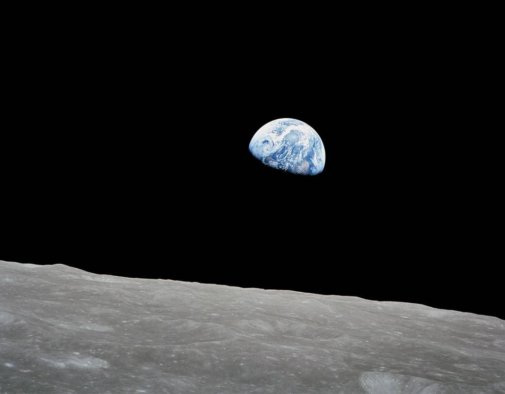

I will continue with reruns starting tomorrow, but I wanted to get a fresh installment out today because it’s officially “Earth Day”. I think of it as the primary holiday (from “holy day”) in the liturgical calendar of the Environmentalist Faith, suitable for a fresh reflection.
As with various days in other religious calendars, Earth Day is intended to remind us of our obligations to honor the Saints and avoid sins throughout the year. Perhaps as a foreshadowing, Earth Day will coincide with Easter Sunday, 2057. Hopefully, by then, we’ll have come to our collective senses about climate control.
As I’ve noted previously, while “Think Global, Act Local” may be an excellent slogan for some crunchy grassroots efforts, that won’t cut it for climate control—diffuse, value-signaling actions by enlightened individuals don’t work 1 .

So, what about Earth Day? According to historian Heather Cox Richardson 2 , the first Earth Day was driven by several convergent societal threads:
-
Rachel Carson’s “Silent Spring” (1962) connects the pesticide DDT to reduced bird populations due to shell malformation,
-
The “earthrise” photograph taken by Maj. Gen. William Anders, Apollo 8 (1968), connecting humanity to our fragile planet,
-
The Santa Barbara oil spill (1969) connected resource extraction with harm to wildlife and
-
The Cuyahoga River fire (1969), connecting rampant pollution to wholly unnatural phenomena.
Of course, the latter part of the 1960s was a time of civil unrest and disobedience, where participation in politics and protest marches became a rite of passage for an entire generation. Earth Day begat the Environmental Protection Agency, one of many expansions of government authority under Republican President Richard Nixon.
After half a century, we can examine the movement objectively to see where it succeeded and failed.
-
Earth Day was the Black Lives Matter of its day, a nationwide “protest march.” It happened on a single Wednesday and involved some 20 million Americans (partly because schoolchildren were involved in nationally scheduled, organized events). Frankly, there was only one side to be on, so I don’t really view it as a protest! [Full disclosure: I’ve willingly participated in only one march, the 2017 “March for Science”. There shouldn’t be “sides” to Science!]
It’s now gone international, with the 2024 theme being “plastics.” That’s precisely what The Graduate’s Benjamin Braddock (Dustin Hoffman) was advised to pursue as a can’t-lose career in 1967! Earth Day is now against an entire material class, apparently, because it provides visible evidence for the devout Environmentalist’s Original Sin, littering. -
The EPA regulates most pesticides (substances that kill unwanted organisms), including insecticides like DDT, fungicides, and animal poisons like rat poisons. [The USDA regulates herbicides like glyphosate (Roundup™).] Before 1970, regulations focused on false claims (think Snake Oil) rather than safety or environmental impact.
Today, the broad legislative definition of a “pesticide” is problematic. The diverse nature of “pests” and the pejorative nature of the word has led to mission creep by the EPA, which now regulates pesticides such as baking soda (true!), warfarin (both a rat poison and a life-saving anticoagulant!), and Bacillus thuringensis (a bacterial soup applied by organic farmers). Today, improvements in analytical methods allow us to measure even trace amounts of “pesticides” in foods, often well below proven (or even rationally suspected) toxic levels. Fearmongering isn’t helpful. -
The Santa Barbara oil spill released 100,000 barrels of oil onto Southern California beaches over ten days due to inadequate safety during drilling.
In contrast, the Deepwater Horizon oil spill in 2010 released 4,900,000 barrels of oil over nearly five months into the Gulf of Mexico due to inadequate safety during drilling.
If you’re keeping score, that’d be negative progress. Both environments have subsequently recovered, but EPA hasn’t prevented oil spills. -
The Cuyahoga River runs through Cleveland, Ohio, and empties into Lake Erie. The fire was one of at least 13 and wasn’t even the most significant fire recorded there, which happened in 1952.
The river has largely recovered thanks to the Clean Water Act (administered by EPA) and improved sewage control, and Lake Erie walleye has returned as a sports fish.
So, that’s a victory, eh?
I don’t doubt that we live in a much cleaner country than the one I was born into. But between headline-grabbing events, hyper-cautionary (and science-light) regulations, and nature's resiliency, three of four events that compelled the formation of the EPA have gone awry.
The question of the moment, then, is, “Do we really want a government that responds cravenly to popular opinion [ viz MAGA on the one hand, and Gaza on the other]?” My view coincides with George Washington’s: A functional democracy needs adults in the room, the “cooling saucer” of the Senate. It’s a lesson that both Chuck and Mitch need to relearn.